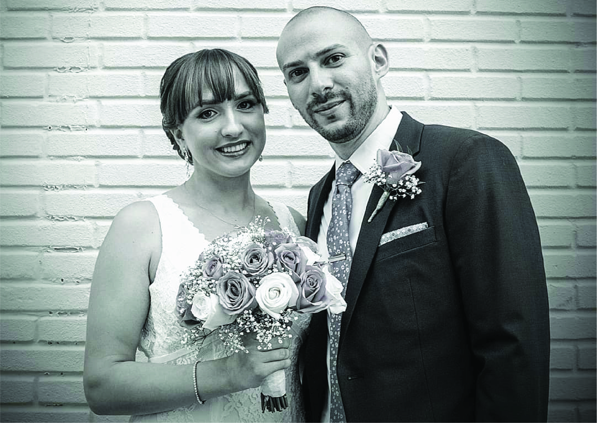
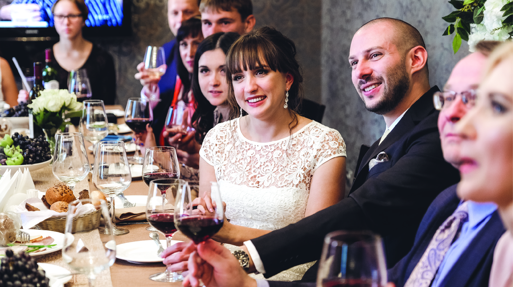

So, let’s do the math. Despite already knowing for two years that I was ready, we got engaged May 26th 2018 (hey, the perfect diamond is expensive). Knowing I wanted an August wedding (with a very specific, very cool date), that gave us a little less than three months to plan. No need to panic, we always thought it silly to be engaged for long periods of time and we had both agreed we wanted more of a simple celebration than an actual wedding (plus the word fiancé is way too pretentious to seriously speak aloud in public). However, she did laugh when I was like “so… I kind of already have a date and an Instagram campaign in mind” – while we enjoyed our engagement brunch! We immediately got to work.
And by immediately, I mean, we booked the venue the very next day!
Let’s rewind a little. Before the engagement, we’d already been together six years. So it’s not like we hadn't already discussed marriage. The great thing? We wanted to be married, but agreed that weddings were kind of silly and mostly ridiculous. The best thing? I can’t remember disagreeing about anything. What we wanted was something that most weddings aren’t, something honest and similar to our everyday lives. What would make it special would be the people, our favorite people, celebrating alongside us. Small guest list? Check! Religion and tradition have nothing to do with either love or marriage, so check and check! Most importantly, the celebration would be local, intimate, personal and meaningful – without boring or subjecting our friends to the wedding hierarchy.
Okay, so we’re back in Brooklyn that evening and decide to continue celebrating at one of our favorite local spots. CEBU is easily the best restaurant in the area, and we frequent often. We inquired about their private event space. They had several options available and were incredibly accommodating. It was exactly what we wanted and so we left a deposit. Venue and catering? Check! Both of us were off from work on Memorial Day, so after going for breakfast that morning, we stopped by Staples for some nice stationery (I had stayed up late the night before designing our wedding invitations). We posted our “Save the date” to Instagram that same day. Check and check! Who said planning a wedding was hard?
August 18, 2018. Eight, one, eight, one, eight, ugh… groomzilla-esque? You bet!
Zero children, and about thirty of only our closest people attend. Perfect. The venue is literally a ten-minute walk from our apartment, but we decided to decorate ourselves (with the help of my parents, my brother, and his girlfriend), so we drove to the restaurant, one car full of decorations, the other full of balloons. With about an hour to decorate we had to hustle a bit, but thankfully it all came together. Special shout-out to Erin, my wife’s best friend, who arrived early and really helped put it together!
There’s this small flower shop located in the subway station near my office. I frequently bring home flowers from them. They have a lot of unique settings and arrangements, and despite their location, the flowers are always fresh and last a long time. Unfortunately, they don’t have a web presence, but you can find them at the 39th Street entrance of the B, D, F, M lines. They were able to customize one of my favorite arrangements for our centerpieces. Beautiful, but simple and small enough that we were able to carry them home the evening before the wedding. They were a big hit too, everyone wanted to take one home as a souvenir! Alongside each centerpiece, we placed a stack of photos we'd taken together throughout the years, along with Sharpie's, and asked everyone to sign the back with advice, wishes or anything they felt. Our plan is to put together a book of all the photos and signatures.
Our color scheme was shades of violet, silver and white. The tables weren’t numbered, but seating was assigned using Polaroid styled photos of each couple and each place setting had custom M&M’s in a heart-shaped tin and a customized (by yours truly) menu/itinerary with our hashtag and social media handle. Instead of a wedding cake, we opted for cupcakes and macaroons from some of our favorite local dessert spots. Throughout the years, we spent a lot of nights just talking and bonding over coffee and cupcakes at the Little Cupcake Bakeshop. I think we always knew it’d be where our cupcakes would come from, and they were able to accommodate our vegan and gluten-free friends! The macaroons were from another spot we often visit for cappuccinos, PEP Bakehouse and Coffee Shop. They also have great desserts!
A few minutes, a couple of vows, a bit of champagne, and we were married. We wrote our own vows and my brother, who we had ordained a few weeks earlier, performed the ceremony just after first course. Official time of marriage, 6:18 pm, or 18:18 military – there’s that groomzilla again!
The New York celebration turned out better than either of us thought it would. That’s not to say we had low expectations, it’s more about how lively our friends and family made the celebration. Everyone mingled, goofed around, partied and danced! There was a giant Instagram frame passed around for photo ops (sorry Tyler, I know we didn’t make it easy for you), we were able to interact with everyone who came, and we managed to fit in a sentimental moment or two. My parents surprised us with a beautiful speech that had a lot of the room teary-eyed, and somehow, everyone convinced us (along with my wife's encouragement) to have an impromptu first dance. I pretended to resist, but there’s no better feeling than holding my wife close. Our song? “Marry Me” by Train.
Yes, we had two separate wedding celebrations! And the second was just as amazing as the first.
My wife is originally from Russia. Siberia to be exact. Her entire family lives there and as difficult as it would’ve been to fly her parents in for the New York celebration, it would’ve been impossible to fly in the rest of her family. So, a second celebration was something we had always planned on.
We flew to Russia the second week of September and spent about seven days there. With the help of her family, we had already arranged the details in the months prior to the trip. Beauty appointment, photographer, venue, flowers, etc. – all done remotely. Social media and video chat are amazing tools!
The color scheme we chose for Russia was mostly shades of gold and white. About thirty people attended and we all sat together, family style, at one long table. The table was set beautifully and there were small vases of flowers running down the center. We brought along NYC branded shot glasses and chocolates as souvenirs. The family style setting was really personal, the food was delicious, the ambiance beautiful, and we had so much fun!
There was no ceremony, but there were lots of speeches. Family members made their way around the table toasting our relationship and many of them tried their hand at an English translation. Oh yeah, I don’t speak a word of Russian! It was definitely appreciated, but we loved it all just the same.
“We planned a pair of simple celebrations, with only our closest friends and family. Both celebrations turned into more festive and lively events because of them. We appreciate you, we love you, and we thank you for making it so much more special for us."
The celebration was held at the beautiful Baloven' restaurant. Their balcony spans the length of the restaurant and our photographer took full advantage of the outdoor space, as well as their spiral staircase and décor. Thanks Nicolay, we love the photos!
The night came to an end, but not before my wife’s aunt and uncle schooled everyone on the dance floor! Dance is truly universal, the music was so much fun. I grabbed a second serving of cake as well as my “slightly” intoxicated bride, and retired back to her parents home, who graciously hosted us. We flew back to New York a couple of days later.